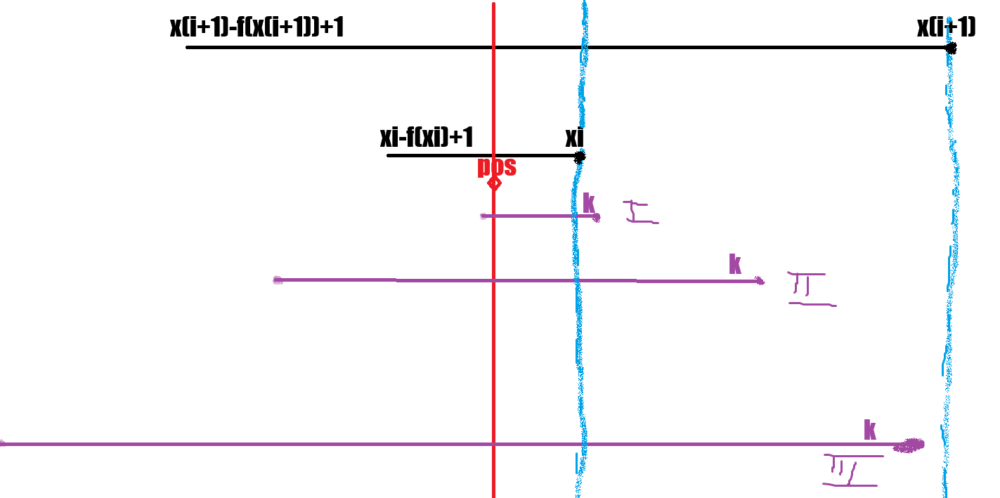

Fie f:ℕ*→ℕ, f(x) = 2UB(x) = (x&-x); f(a1b) = 1b;
Fie șirul (x)n, x0 = pos, xi+1 = xi + f(xi)
Vom demonstra: Dacă k ∈ [x - f(x) + 1, x], atunci k ∈ [x + f(x) - f(f(x) + x) + 1, x + f(x)]
x < x + f(x) ⇔ 0 < f(x) ⇔ 0 < 2UB(x) adevărat (condiția 1)
f - f(x) + 1 ≥ x + f(x) - f(f(x) + x) + 1 ⇔ f(f(x) + x) ≥ 2 * f(x) ⇔ 2UB(f(x) + x) ≥ 2UB(x) + 1 ⇔ UB(x + f(x)) ≥ UB(x) + 1
Notăm forma binară a numărului x drept a1b
UB(x + f(x)) ≥ UB(x) + 1 ⇔ UB(a1b + 1b) ≥ 1 + 1b ⇔ (a + 1)0b ≥ 10b ⇔ (a+1) ≥ 1, adevărat (condiția 2)
(condiția 1) + (condiția 2) ⇒ Dacă k ∈ [x - f(x) + 1, x], atunci k ∈ [x + f(x) - f(f(x) + x) + 1, x + f(x)], c.c.t.d.
Din această relație rezultă prin inducție că toți termenii șirului (x)n conțin pos în intervalele lor.
Vom demonstra că ∄ k astfel încât k ⊄ (x)n, pos ∈ [k - f(k) + 1, k].
Presupunem prin absurd că ∃ k astfel încât k ⊄ (x)n, pos ∈ [k - f(k) + 1, k]. Fară a restrânge generalitatea putem afirma că k se află între 2 termeni consecutivi ai șirului xi și xi+1 ⇒ xi < k < xi+1 (condiție *)
 | Acestea sunt singurele 3 cazuri posibile astfel încât pos ∈ [k - f(k) + 1, k] și condiția * să fie îndeplinite. Putem reduce cazul II și III folosind faptul că din condiția * ⇒ f(k) ≤ f(xi), ceea ce vom demonstra mai jos. |
Din h = M2UB(h) ∀h ∈ ℕ* ⇒ xi = M2UB(xi), iar UB(xi+1) ≥ 1 + UB(xi) ⇒ xi+1 = M2UB(xi) + 1 = M2UB(xi)
Din condiția * ⇒ k ∈ {xi + 1, xi + 2, ..., xi+1 - 1}, xi+1 = xi + 2UB(xi). Aplicând %2UB(xi) ⇒ k %2UB(xi) ∈ {1, 2, ..., 2UB(xi) - 1}. Așadar, UB(k) < UB(xi) ⇒ f(k) < f(xi) (condiția **). Notăm xi = a1b , k=A1B și |nr| = numărul de cifre a numărului nr, rezultă din condiția ** faptul că |B| < |b|, dar din condiția * ⇒ a1b < A1b ⇒ a1B < A1B ⇒ a < A ⇒ (a + 1) ≤ A ⇒ din condiția *: A1B < (a + 1)0b ≤ A0b ⇒ A1B < A0b ⇒ 1 ≤1B < 0b (b, B sunt șiruri de 0) ⇒ 1 < 0, contradicție ⇒ ∄ k astfel încât k ⊄ (x)n, pos ∈ [k - f(k) + 1, k].
Pe scurt: Aceste 2 demonstrații ne arată că singurii indecși ce trebuie actualizați sunt pos, pos + (pos&-pos), pos + (pos&-pos) + (pos + (pos&-pos)&-(pos + (pos&-pos))) s.a.m.d